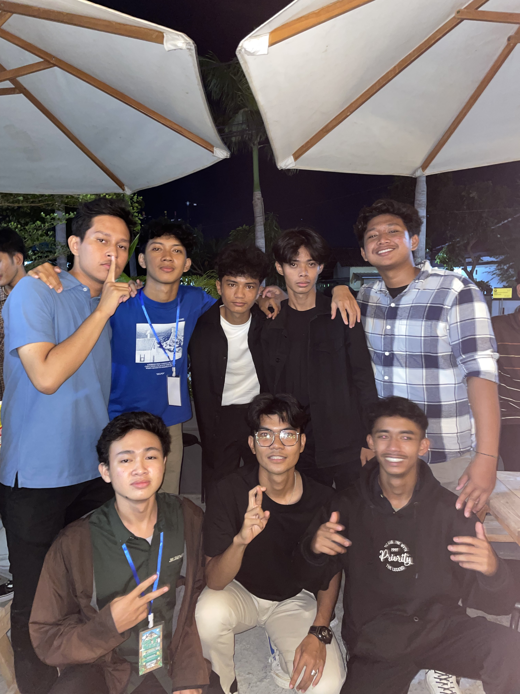
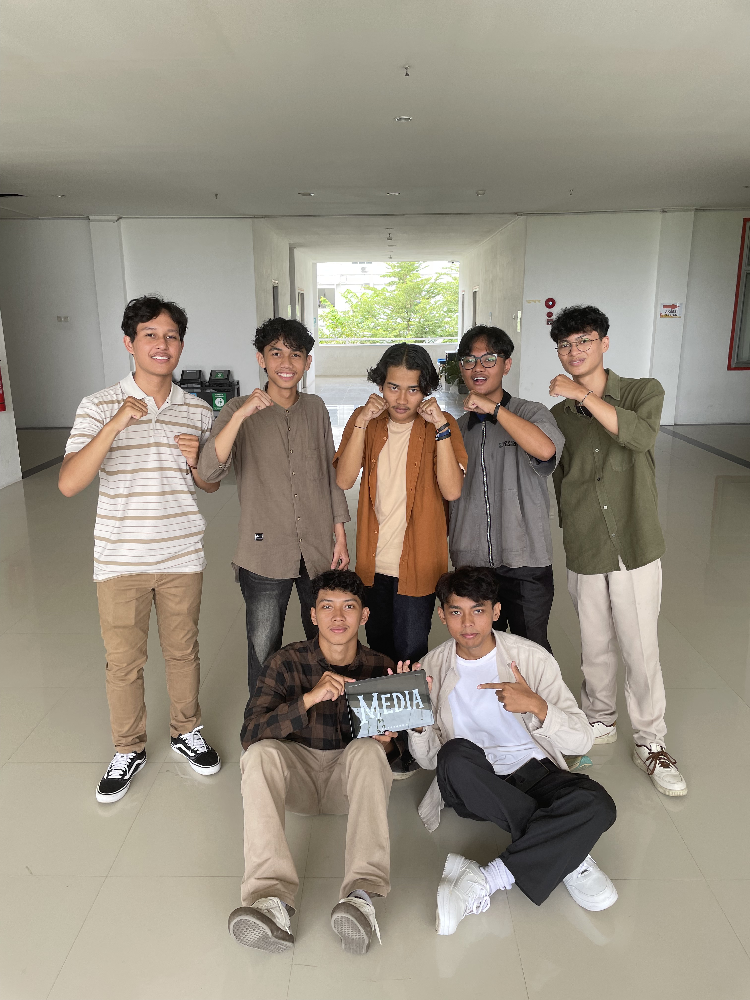
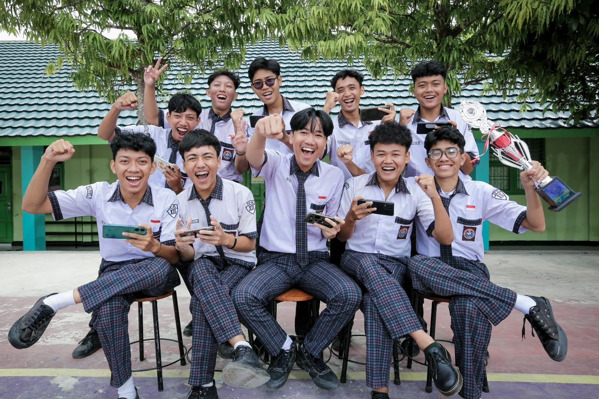
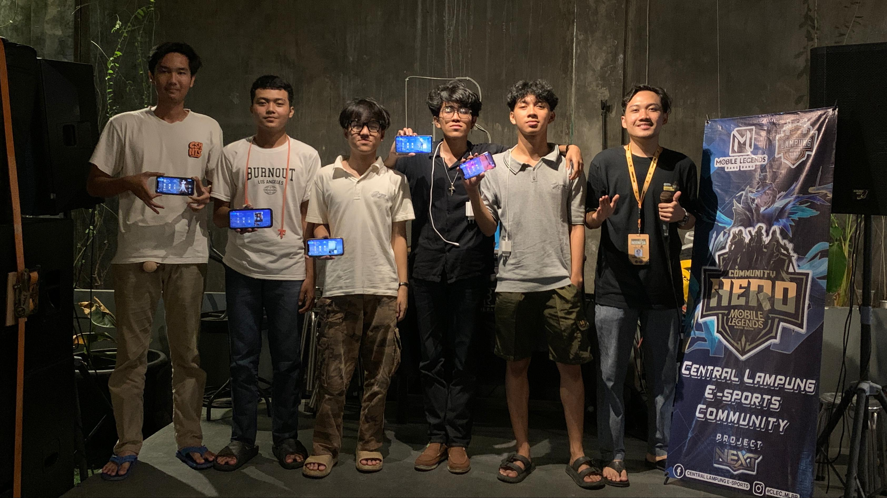

Saya mahasiswa aktif yang baru memasuki semester 3 di jurusan Teknik Informatika, Institut Teknologi Sumatera. Memiliki ketertarikan pada pengembangan di bidang Informatika serta Desain Grafis. Berbekal pengalaman kepanitiaan membuat diri saya mampu beradaptasi dan dapat berkomunikasi secara baik. Selain itu juga memungkinkan diri saya untuk selalu mencoba hal maupun tantangan baru di hidup saya, yang bertujuan untuk meningkatkan skill serta kepercayaan diri yang lebih baik.
| No | Nama Kegiatan/Acara | Tahun | Divisi | Deskripsi Tugas | Dokumentasi |
|---|---|---|---|---|---|
| 1 | First Meet Teknik Informatika | 2024 | Mobilisasi dan Transportasi | Mengatur mobilisasi peserta dan panitia serta koordinasi kendaraan selama acara berlangsung |  |
| 2 | Bumi Ketupat | 2024 | Publikasi dan Dokumentasi | Bertanggung jawab atas penyebaran informasi kegiatan dan pendokumentasian seluruh rangkaian acara melalui media sosial, berbentuk foto maupun video |  |
| 3 | Smanpat Championship | 2024 | Operasional | Menyusun dan mengatur kebutuhan operasional acara, seperti kelengkapan, tata ruangan, serta memastikan seluruh elemen pendukung kegiatan berjalan sesuai rencana dan tepat waktu |  |
| 4 | Juara Game Online | 2024 | Player | Pemain game online aktif dalam komunitas dan turnamen offline maupun online, dengan fokus pada kerja tim, strategi permainan, dan pengembangan skill kompetitif |  |
syahrulafwan82@gmail.com
+62 899 1827 544
Korpri Raya, Blue Kos